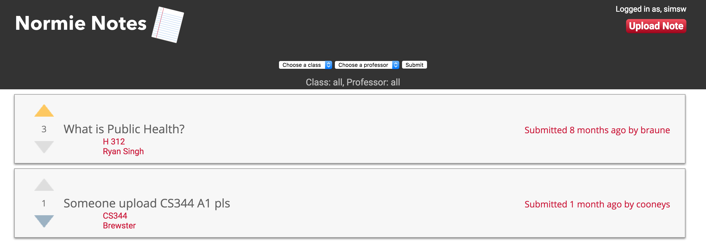

Normie Notes Web Application
The Challenge
Design and implement a web application with computer science students at Oregon State University.
My Role
- Design
- Usability
- Front-end development
Concept
The final project for my web development course at Oregon State University required that students work together in groups of five people and create a useful website. For my project, my group and I decided that we wanted to build a website that allows students to share notes for their classes. The fast-paced nature of college courses makes it very easy to fall behind if you miss a lecture. The goal of Normie Notes was to provide a platform for students to collaborate and access helpful information to stay up to date in their studies.
Preliminary Designs
I first designed the concept for Normie Notes in Sketch before moving on to front-end development. I intially thought that it was neccesary to have pages for signing in and creating an account until I realized that it would be more efficient for students to login with their Oregon State University accounts.


The first iteration of the homepage involved a table of notes that are sorted by a rating system from one to five. I originally planned to use global search for finding notes, but eventually decided that a dropdown filtering method would be more effective and easier to implement. I chose a dropdown filter because you're less likely of searching on the incorrect course number or mispelling a professor's name when trying to find notes for a specific course.

Results
I used the website Reddit as a reference for the final design of Normie Notes. You search for notes by filtering on either class or professor. Instead of using five-point ratings to sort the notes, I chose to use upvotes and downvotes. This provides a simple way of finding high quality notes that is easy to understand and more efficient than rating from one to five.
I simplied the interface by removing the sign-in and account create pages. Using PHP and the school Central Authentication Service (CAS), I implemented a function that allows users to gain access to uploading notes by logging into their Oregon State account. This limits the uploading of notes to Oregon State students and removes unnecessary step of creating an account.

Takeaways
During this project, I gained valuble experience working on a team and building a website from the ground up. We established a problem and worked together to develop a solution. My teammates primarily focused on back-end development and I was responsible for the user experience. Due to time constaints, usability testing consisted of presenting the website to my roommates and observing them as they attempted to find or upload a note. Although this method isn't ideal, it was effective for this project. Working on Normie Notes was also a great opportunity to practice designing in Sketch and refining my font-end development skills.
Thanks for reading. Other examples of my work can be found on my Usability Benchmarking page and my Puppet research page.